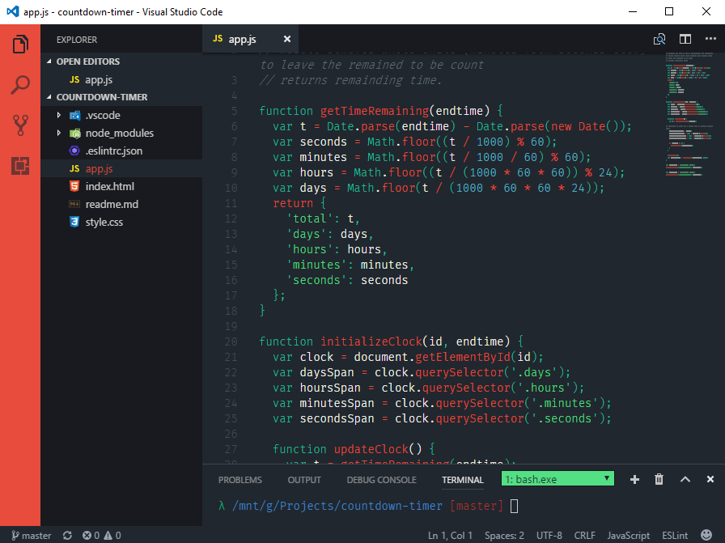

Henna
Henna is a colour theme for Visual Studio Code. It's utilizing the new theme standard that allows workbench colouring and it's not relying on the outdated Textmate theme format.
Each colour is selected carefully to help legibility (with dyslexics like myself in mind).
